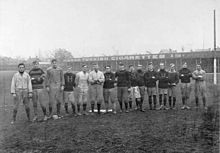
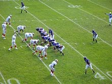

A painting depicting Emperor Taizu of Songplaying cuju (i.e. Chinese football) with his prime minister Zhao Pu and other ministers, by the Yuan dynasty artist Qian Xuan (1235–1305).
The Ancient Greeks and Romans are known to have played many ball games, some of which involved the use of the feet. The Roman game harpastum is believed to have been adapted from a Greek team game known as Episkyros or phaininda, which is mentioned by a Greek playwright, Antiphanes (388–311 BC) and later referred to by the Christian theologian Clement of Alexandria (c. 150 – c. 215 AD). These games appear to have resembled rugby football. The Roman politician Cicero (106–43 BC) describes the case of a man who was killed whilst having a shave when a ball was kicked into a barber's shop. Roman ball games already knew the air-filled ball, the follis. Episkyros is recognised as an early form of football by FIFA.
A Chinese game called Cuju, Tsu' Chu, or Zuqiu has been recognised by FIFA as the first version of the game with regular rules. It existed during the Han dynasty, the second and third centuries BC. The Japanese version of cuju is kemari and was developed during the Asuka period. This is known to have been played within the Japanese imperial court in Kyoto from about 600 AD. In kemari several people stand in a circle and kick a ball to each other, trying not to let the ball drop to the ground (much like keepie uppie). The game appears to have died out sometime before the mid-19th century. It was revived in 1903 and is now played at a number of festivals.
There are a number of references to traditional, ancient, or prehistoric ball games, played by indigenous peoples in many different parts of the world. For example, in 1586, men from a ship commanded by an English explorer named John Davis, went ashore to play a form of football with Inuit (Eskimo) people in Greenland. There are later accounts of an Inuit game played on ice, called Aqsaqtuk. Each match began with two teams facing each other in parallel lines, before attempting to kick the ball through each other team's line and then at a goal. In 1610, William Strachey, a colonist at Jamestown, Virginia recorded a game played by Native Americans, called Pahsaheman. On the Australian continent several tribes of indigenous people played kicking and catching games with stuffed balls which have been generalised by historians as Marn Grook (Djab Wurrung for "game ball"). The earliest historical account is an anecdote from the 1878 book by Robert Brough-Smyth, The Aborigines of Victoria, in which a man called Richard Thomas is quoted as saying, in about 1841 in Victoria, Australia, that he had witnessed Aboriginal people playing the game: "Mr Thomas describes how the foremost player will drop kick a ball made from the skin of a possum and how other players leap into the air in order to catch it." Some historians have theorised that Marn Grook was one of the origins of Australian rules football.
The Maori in New Zealand played a game called Ki-o-rahi consisting of teams of seven players play on a circular field divided into zones, and score points by touching the 'pou' (boundary markers) and hitting a central 'tupu' or target.
Games played in Mesoamerica with rubber balls by indigenous peoples are also well-documented as existing since before this time, but these had more similarities to basketball or volleyball, and no links have been found between such games and modern football sports. Northeastern American Indians, especially the Iroquois Confederation, played a game which made use of net racquets to throw and catch a small ball; however, although it is a ball-goal foot game, lacrosse (as its modern descendant is called) is likewise not usually classed as a form of "football".
These games and others may well go far back into antiquity. However, the main sources of modern football codes appear to lie in western Europe, especially England.
Ancient Greek football player balancing the ball. Depiction on an Attic Lekythos, Piraeus, 400-375 BC.
A Song dynasty painting by Su Hanchen (c. 1130-1160), depicting Chinese children playing cuju.
Paint of a Mesoamerican ballgame player of the Tepantitla murals in Teotihuacan.
A revived version of kemari being played at the Tanzan Shrine, Japan.
An illustration from the 1850s of Australian Aboriginal hunter gatherers. File:Children in the background are playing a football game, possibly Woggabaliri.
A group of aborigines playing football in Guiana.
Middle Ages saw a huge rise in popularity of annual Shrovetide football matches throughout Europe, particularly in England. An early reference to a ball game played in Britain comes from the 9th century Historia Brittonum, which describes "a party of boys ... playing at ball". References to a ball game played in The northern France known as La Soule or Choule, in which the ball was propelled by hands, feet, and sticks,] date from the 12th century.
The early forms of football played in England, sometimes referred to as "mob football", would be played between neighbouring towns and villages, involving an unlimited number of players on opposing teams who would clash en masse, struggling to move an item, such as inflated animal's bladder to particular geographical points, such as their opponents' church, with play taking place in the open space between neighbouring parishes. The game was played primarily during significant religious festivals, such as Shrovetide, Christmas, or Easter, and Shrovetide games have survived into the modern era in a number of English towns.
The first detailed description of what was almost certainly football in England was given by William FitzStephen in about 1174–1183. He described the activities of London youths during the annual festival of Shrove Tuesday:
After lunch all the youth of the city go out into the fields to take part in a ball game. The students of each school have their own ball; the workers from each city craft are also carrying their balls. Older citizens, fathers, and wealthy citizens come on horseback to watch their juniors competing, and to relive their own youth vicariously: you can see their inner passions aroused as they watch the action and get caught up in the fun being had by the carefree adolescents.
Most of the very early references to the game speak simply of "ball play" or "playing at ball". This reinforces the idea that the games played at the time did not necessarily involve a ball being kicked.
An early reference to a ball game that was probably football comes from 1280 at Ulgham, Northumberland, England: "Henry... while playing at ball.. ran against David". Football was played in Ireland in 1308, with a documented reference to John McCrocan, a spectator at a "football game" at Newcastle, County Down being charged with accidentally stabbing a player named William Bernard. Another reference to a football game comes in 1321 at Shouldham, Norfolk, England: "[d]uring the game at ball as he kicked the ball, a lay friend of his... ran against him and wounded himself".
In 1314, Nicholas de Farndone, Lord Mayor of the City of London issued a decree banning football in the French used by the English upper classes at the time. A translation reads: "[f]orasmuch as there is great noise in the city caused by hustling over large foot balls [rageries de grosses pelotes de pee] in the fields of the public from which many evils might arise which God forbid: we command and forbid on behalf of the king, on pain of imprisonment, such game to be used in the city in the future." This is the earliest reference to football.
In 1363, King Edward III of England issued a proclamation banning "...handball, football, or hockey; coursing and cock-fighting, or other such idle games", showing that "football" – whatever its exact form in this case – was being differentiated from games involving other parts of the body, such as handball.
A game known as "football" was played in Scotland as early as the 15th century: it was prohibited by the Football Act 1424 and although the law fell into disuse it was not repealed until 1906. There is evidence for schoolboys playing a "football" ball game in Aberdeen in 1633 (some references cite 1636) which is notable as an early allusion to what some have considered to be passing the ball. The word "pass" in the most recent translation is derived from "huc percute" (strike it here) and later "repercute pilam" (strike the ball again) in the original Latin. It is not certain that the ball was being struck between members of the same team. The original word translated as "goal" is "metum", literally meaning the "pillar at each end of the circus course" in a Roman chariot race. There is a reference to "get hold of the ball before [another player] does" (Praeripe illi pilam si possis agere) suggesting that handling of the ball was allowed. One sentence states in the original 1930 translation "Throw yourself against him" (Age, objice te illi).
King Henry IV of England also presented one of the earliest documented uses of the English word "football", in 1409, when he issued a proclamation forbidding the levying of money for "foteball".
There is also an account in Latin from the end of the 15th century of football being played at Cawston, Nottinghamshire. This is the first description of a "kicking game" and the first description of dribbling: "[t]he game at which they had met for common recreation is called by some the foot-ball game. It is one in which young men, in country sport, propel a huge ball not by throwing it into the air but by striking it and rolling it along the ground, and that not with their hands but with their feet... kicking in opposite directions" The chronicler gives the earliest reference to a football pitch, stating that: "[t]he boundaries have been marked and the game had started.
Other firsts in the mediæval and early modern eras:
• "a football", in the sense of a ball rather than a game, was first mentioned in 1486. This reference is in Dame Juliana Berners' Book of St Albans. It states: "a certain rounde instrument to play with ...it is an instrument for the foote and then it is calde in Latyn 'pila pedalis', a fotebal."
• a pair of football boots was ordered by King Henry VIII of England in 1526.
• women playing a form of football was first described in 1580 by Sir Philip Sidney in one of his poems: "[a] tyme there is for all, my mother often sayes, When she, with skirts tuckt very hy, with girles at football playes."
• the first references to goals are in the late 16th and early 17th centuries. In 1584 and 1602 respectively, John Norden and Richard Carew referred to "goals" in Cornish hurling. Carew described how goals were made: "they pitch two bushes in the ground, some eight or ten foote asunder; and directly against them, ten or twelue [twelve] score off, other twayne in like distance, which they terme their Goales". He is also the first to describe goalkeepers and passing of the ball between players.
• the first direct reference to scoring a goal is in John Day's play The Blind Beggar of Bethnal Green (performed circa 1600; published 1659): "I'll play a gole at camp-ball" (an extremely violent variety of football, which was popular in East Anglia). Similarly in a poem in 1613, Michael Drayton refers to "when the Ball to throw, And drive it to the Gole, in squadrons forth they goe".
An illustration of the Calcio Fiorentino field and starting positions, from a 1688 book by Pietro di Lorenzo Bini.
In the 16th century, the city of Florence celebrated the period between Epiphany and Lent by playing a game which today is known as "calcio storico" ("historic kickball") in the Piazza Santa Croce. The young aristocrats of the city would dress up in fine silk costumes and embroil themselves in a violent form of football. For example, calcio players could punch, shoulder charge, and kick opponents. Blows below the belt were allowed. The game is said to have originated as a military training exercise. In 1580, Count Giovanni de' Bardi di Vernio wrote Discorso sopra 'l giuoco del Calcio Fiorentino. This is sometimes said to be the earliest code of rules for any football game. The game was not played after January 1739 (until it was revived in May 1930).
There have been many attempts to ban football, from the middle ages through to the modern day. The first such law was passed in England in 1314; it was followed by more than 30 in England alone between 1314 and 1667.Football faced armed opposition in the 18th Century when used as a cover for violent protest against the enclosure act. Women were banned from playing at English and Scottish Football League grounds in 1921, a ban that was only lifted in the 1970s. Female footballers still face similar problems in some parts of the world.
Sports clubs dedicated to playing football began in the 18th century, for example London's Gymnastic Society which was founded in the mid-18th century and ceased playing matches in 1796. The first documented club to bear in the title a reference to being a 'football club' were called "The Foot-Ball Club" who were located in Edinburgh, Scotland, during the period 1824–41. The club forbade tripping but allowed pushing and holding and the picking up of the ball. In 1845, three boys at Rugby school were tasked with codifying the rules then being used at the school. These were the first set of written rules (or code) for any form of football.[55] This further assisted the spread of the Rugby game.
One of the longest running football fixture is the Cordner-Eggleston Cup, contested between Melbourne Grammar School and Scotch College, Melbourne every year since 1858. It is believed by many to also be the first match of Australian rules football, although it was played under experimental rules in its first year. The first football trophy tournament was the Caledonian Challenge Cup, donated by the Royal Caledonian Society of Melbourne, played in 1861 under the Melbourne Rules. The oldest football league is a rugby football competition, the United Hospitals Challenge Cup (1874), while the oldest rugby trophy is the Yorkshire Cup, contested since 1878. The South Australian Football Association (30 April 1877) is the oldest surviving Australian rules football competition. The oldest surviving soccer trophy is the Youdan Cup (1867) and the oldest national soccer competition is the English FA Cup (1871). The Football League(1888) is recognised as the longest running Association Football league. The first ever international football match took place between sides representing England and Scotland on March 5, 1870 at the Oval under the authority of the FA. The first Rugby international took place in 1871.
In 1848, at Cambridge University, Mr. H. de Winton and Mr. J.C. Thring, who were both formerly at Shrewsbury School, called a meeting at Trinity College, Cambridge with 12 other representatives from Eton, Harrow, Rugby, Winchester and Shrewsbury. An eight-hour meeting produced what amounted to the first set of modern rules, known as the Cambridge rules. No copy of these rules now exists, but a revised version from circa 1856 is held in the library of Shrewsbury School. The rules clearly favour the kicking game. Handling was only allowed when a player catches the ball directly from the foot entitling them to a free kick and there was a primitive offside rule, disallowing players from "loitering" around the opponents' goal. The Cambridge rules were not widely adopted outside English public schools and universities (but it was arguably the most significant influence on the Football Association committee members responsible for formulating the rules of Association football).
By the late 1850s, many football clubs had been formed throughout the English-speaking world, to play various codes of football. Sheffield Football Club, founded in 1857 in the English city of Sheffield by Nathaniel Creswick and William Prest, was later recognised as the world's oldest club playing association football. However, the club initially played its own code of football: the Sheffield rules. The code was largely independent of the public school rules, the most significant difference being the lack of an offside rule.
The code was responsible for many innovations that later spread to association football. These included free kicks, corner kicks, handball, throw-ins and the crossbar. By the 1870s they became the dominant code in the north and midlands of England. At this time a series of rule changes by both the London and Sheffield FAs gradually eroded the differences between the two games until the adoption of a common code in 1877.
In Britain, by 1870, there were about 75 clubs playing variations of the Rugby school game. There were also "rugby" clubs in Ireland, Australia, Canada and New Zealand. However, there was no generally accepted set of rules for rugby until 1871, when 21 clubs from London came together to form the Rugby Football Union (RFU). The first official RFU rules were adopted in June 1871. These rules allowed passing the ball. They also included the try, where touching the ball over the line allowed an attempt at goal, though drop-goals from marks and general play, and penalty conversions were still the main form of contest.
As was the case in Britain, by the early 19th century, North American schools and universities played their own local games, between sides made up of students. For example, students at Dartmouth College in New Hampshire played a game called Old division football, a variant of the association football codes, as early as the 1820s. They remained largely "mob football" style games, with huge numbers of players attempting to advance the ball into a goal area, often by any means necessary. Rules were simple, violence and injury were common. The violence of these mob-style games led to widespread protests and a decision to abandon them. Yale University, under pressure from the city of New Haven, banned the play of all forms of football in 1860, while Harvard University followed suit in 1861.] In its place, two general types of football evolved: "kicking" games and "running" (or "carrying") games. A hybrid of the two, known as the "Boston game", was played by a group known as the Oneida Football Club. The club, considered by some historians as the first formal football club in the United States, was formed in 1862 by schoolboys who played the "Boston game" on Boston Common. The game began to return to American college campuses by the late 1860s. The universities of Yale, Princeton (then known as the College of New Jersey), Rutgers, and Brown all began playing "kicking" games during this time. In 1867, Princeton used rules based on those of the English Football Association.
The "Tigers" of Hamilton, Ontario, circa 1906. Founded 1869 as the Hamilton Foot Ball Club, they eventually merged with the Hamilton Flying Wildcats to form the Hamilton Tiger-Cats, a team still active in the Canadian Football League.
In Canada, the first documented football match was a practice game played on November 9, 1861, at University College, University of Toronto (approximately 400 yards west of Queen's Park). One of the participants in the game involving University of Toronto students was (Sir) William Mulock, later Chancellor of the school. In 1864, at Trinity College, Toronto, F. Barlow Cumberland, Frederick A. Bethune, and Christopher Gwynn, one of the founders of Milton, Massachusetts, devised rules based on rugby football. A "running game", resembling rugby football, was then taken up by the Montreal Football Club in Canada in 1868.
On November 6, 1869, Rutgers faced Princeton in a game that was played with a round ball and, like all early games, used improvised rules. It is usually regarded as the first game of American intercollegiate football.
Modern North American football grew out of a match between McGill University of Montreal, and Harvard University in 1874. During the game, the two teams alternated between the rugby-based rules used by McGill and the Boston Game rules used by Harvard. Within a few years, Harvard had both adopted McGill's rules and had persuaded other U.S. university teams to do the same. On November 23, 1876, representatives from Harvard, Yale, Princeton, and Columbia met at the Massasoit Convention in Springfield, Massachusetts, agreeing to adopt most of the Rugby Football Union rules, with some variations.
Rutgers College Football Team, 1882
In 1880, Yale coach Walter Camp, who had become a fixture at the Massasoit House conventions where the rules were debated and changed, devised a number of major innovations. Camp's two most important rule changes that diverged the American game from rugby was replacing the scrummage with the line of scrimmage and the establishment of the down-and-distance rules. American football still however remained a violent sport where collisions often led to serious injuries and sometimes even death. This led U.S. President Theodore Roosevelt to hold a meeting with football representatives from Harvard, Yale, and Princeton on October 9, 1905, urging them to make drastic changes. One rule change introduced in 1906, devised to open up the game and reduce injury, was the introduction of the legal forward pass. Though it was underutilised for years, this proved to be one of the most important rule changes in the establishment of the modern game.
Over the years, Canada absorbed some of the developments in American football in an effort to distinguish it from a more rugby-oriented game. In 1903, the Ontario Rugby Football Union adopted the Burnside rules, which implemented the line of scrimmage and down-and-distance system from American football, among others. Canadian football then implemented the legal forward pass in 1929. American and Canadian football remain different codes, stemming from rule changes that the American side of the border adopted but the Canadian side has not.
The All-Ireland Football Final in Croke Park, 2004.
In the mid-19th century, various traditional football games, referred to collectively as caid, remained popular in Ireland, especially in County Kerry. One observer, Father W. Ferris, described two main forms of caid during this period: the "field game" in which the object was to put the ball through arch-like goals, formed from the boughs of two trees; and the epic "cross-country game" which took up most of the daylight hours of a Sunday on which it was played, and was won by one team taking the ball across a parish boundary. "Wrestling", "holding" opposing players, and carrying the ball were all allowed.
By the 1870s, Rugby and Association football had started to become popular in Ireland. Trinity College, Dublin was an early stronghold of Rugby (see the Developments in the 1850s section, above). The rules of the English FA were being distributed widely. Traditional forms of caid had begun to give way to a "rough-and-tumble game" which allowed tripping.
There was no serious attempt to unify and codify Irish varieties of football, until the establishment of the Gaelic Athletic Association (GAA) in 1884. The GAA sought to promote traditional Irish sports, such as hurling and to reject imported games like Rugby and Association football. The first Gaelic football rules were drawn up by Maurice Davin and published in the United Ireland magazine on February 7, 1887. Davin's rules showed the influence of games such as hurling and a desire to formalise a distinctly Irish code of football. The prime example of this differentiation was the lack of an offside rule (an attribute which, for many years, was shared only by other Irish games like hurling, and by Australian rules football).
An English cartoon from the 1890s lampooning the divide in rugby football which led to the formation of rugby league. The caricatures are of Rev. Frank Marshall, an arch-opponent of player payments, and James Miller, a long-time opponent of Marshall. The caption reads: Marshall: "Oh, fie, go away naughty boy, I don't play with boys who can’t afford to take a holiday for football any day they like!" Miller: "Yes, that's just you to a T; you’d make it so that no lad whose father wasn’t a millionaire could play at all in a really good team. For my part I see no reason why the men who make the money shouldn’t have a share in the spending of it."
The International Rugby Football Board (IRFB) was founded in 1886, but rifts were beginning to emerge in the code. Professionalism had already begun to creep into the various codes of football.
In England, by the 1890s, a long-standing Rugby Football Union ban on professional players was causing regional tensions within rugby football, as many players in northern England were working class and could not afford to take time off to train, travel, play and recover from injuries. This was not very different from what had occurred ten years earlier in soccer in Northern England but the authorities reacted very differently in the RFU, attempting to alienate the working class support in Northern England. In 1895, following a dispute about a player being paid broken time payments, which replaced wages lost as a result of playing rugby, representatives of the northern clubs met in Huddersfield to form the Northern Rugby Football Union (NRFU). The new body initially permitted only various types of player wage replacements. However, within two years, NRFU players could be paid, but they were required to have a job outside sport.
The demands of a professional league dictated that rugby had to become a better "spectator" sport. Within a few years the NRFU rules had started to diverge from the RFU, most notably with the abolition of the line-out. This was followed by the replacement of the ruck with the "play-the-ball ruck", which allowed a two-player ruck contest between the tackler at marker and the player tackled. Mauls were stopped once the ball carrier was held, being replaced by a play-the ball-ruck. The separate Lancashire and Yorkshire competitions of the NRFU merged in 1901, forming the Northern Rugby League, the first time the name rugby league was used officially in England.
Over time, the RFU form of rugby, played by clubs which remained members of national federations affiliated to the IRFB, became known as rugby union.
The need for a single body to oversee association football had become apparent by the beginning of the 20th century, with the increasing popularity of international fixtures. The English Football Association had chaired many discussions on setting up an international body, but was perceived as making no progress. It fell to associations from seven other European countries: France, Belgium, Denmark, Netherlands, Spain, Sweden, and Switzerland, to form an international association. The Fédération Internationale de Football Association(FIFA) was founded in Paris on May 21, 1904. Its first president was Robert Guérin. The French name and acronym has remained, even outside French-speaking countries.
The word football, when used in reference to a specific game can mean any one of those described above. Because of this, much friendly controversy has occurred over the term football, primarily because it is used in different ways in different parts of the English-speaking world. Most often, the word "football" is used to refer to the code of football that is considered dominant within a particular region. So, effectively, what the word "football" means usually depends on where one says it.
Players assemble at the line of scrimmage in an American footballgame.
In each of the United Kingdom, the United States, and Canada, one football code is known solely as "football", while the others generally require a qualifier. In New Zealand, "football" historically referred to rugby union, but more recently may be used unqualified to refer to association football. The sport meant by the word "football" in Australia is either Australian rules football or rugby league, depending on local popularity (which largely conforms to the Barassi Line). In francophone Quebec, where Canadian football is more popular, the Canadian code is known as le football while American football is known as le football américain and association football is known as le soccer. Of the 45 national FIFA (Fédération Internationale de Football Association) affiliates in which English is an official or primary language, most currently use Football in their organisations' official names; the FIFA affiliates in Canada and the United Statesuse Soccer in their names. A few FIFA affiliates have recently "normalised" to using "Football", including:
• Australia's association football governing body changed its name in 2005 from using "soccer" to "football"
• New Zealand's governing body also changed in 2007, saying "the international game is called football."
• Samoa changed from "Samoa Football (Soccer) Federation" to "Football Federation Samoa" in 2009.
Several of the football codes are the most popular team sports in the world. Globally, association football is played by over 250 million players in over 200 nations, and has the highest television audience in sport, making it the most popular in the world, American football is the most popular sport in the United States, with the annual Super Bowl game accounting for seven of the top eight of the most watched broadcasts in U.S. television history. Australian rules football has the highest spectator attendance of all sports in Australia. Similarly, Gaelic football is the most popular sport in Ireland in terms of match attendance, and the All-Ireland Football Final is the most watched event of that nation's sporting year.